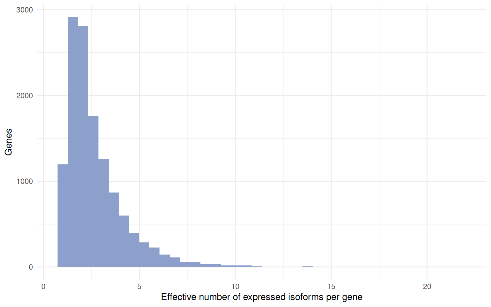
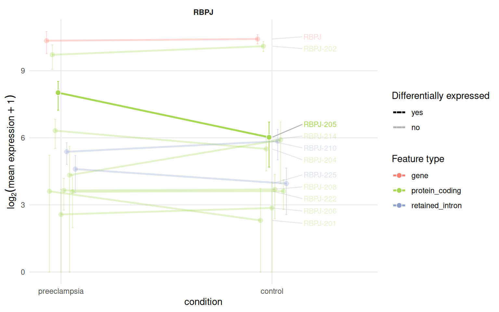

library(isoformic)
library(dplyr)
library(ggplot2)
extdata <- fs::path_package("isoformic", "extdata")
annot_dir <- prepare_isoformic_annotation(download_reference(version = "33", file_type = "gff"))
iso <- IsoformicExperiment(
experiment_name = "preeclampsia_placenta",
annot_path = annot_dir,
assays = list(abundance = read_parquet(fs::path(extdata, "pe_abundance.parquet"))),
col_data = read_parquet(fs::path(extdata, "pe_col_data.parquet"))
)
de_tx(iso) <- read_parquet(fs::path(extdata, "pe_det.parquet"))
de_gene(iso) <- read_parquet(fs::path(extdata, "pe_deg.parquet"))A gene-level analysis sums the isoforms of a gene and asks whether the sum changes. This article asks how the expression of a gene is distributed across its isoforms, whether the dominant isoform is the canonical one, whether it differs between conditions and where the transcript-level and gene-level calls disagree.
It starts from the object built in the introduction:
Isoform usage per gene
tx_diversity() summarises how each gene uses its isoforms: how many are annotated, assayed and expressed, how many transcript types they span, which isoform dominates and the effective number of isoforms (1 when a single isoform carries all the expression, equal to the number of isoforms when they are expressed evenly).
diversity <- tx_diversity(iso, min_expr = 1, min_samples = 3)
head(diversity)
#> # A tibble: 6 × 14
#> gene_id gene_name gene_type n_tx_annotated n_tx_assayed n_tx_expressed
#> <chr> <chr> <chr> <int> <int> <int>
#> 1 ENSG0000017296… MIR4435-… lncRNA 108 29 29
#> 2 ENSG0000019791… SPG7 protein_… 96 45 45
#> 3 ENSG0000010126… CSNK2A1 protein_… 48 34 34
#> 4 ENSG0000024208… MUC20-OT1 lncRNA 142 53 53
#> 5 ENSG0000024853… AC022784… lncRNA 70 26 26
#> 6 ENSG0000017981… PCBP1-AS1 lncRNA 239 32 32
#> # ℹ 8 more variables: n_tx_types <int>, tx_types <chr>, mean_gene_expr <dbl>,
#> # dominant_transcript_id <chr>, dominant_transcript_name <chr>,
#> # dominant_transcript_type <chr>, dominant_fraction <dbl>,
#> # effective_isoforms <dbl>
diversity |>
filter(n_tx_expressed >= 2) |>
ggplot(aes(effective_isoforms)) +
geom_histogram(bins = 40, fill = "#8da0cb") +
labs(x = "Effective number of expressed isoforms per gene", y = "Genes") +
theme_minimal()
Dominant isoforms
dominant_isoform() finds the dominant isoform of each gene per condition and flags genes whose dominant isoform differs between conditions. Transcripts carry their annotation tags (MANE_Select, Ensembl_canonical, basic, …) and an is_canonical flag, so the table also tells whether the dominant isoform of a gene is its canonical transcript.
dominant <- dominant_isoform(iso, group = "condition")
dominant |>
filter(dominant_switch, gene_expr > 10) |>
head(10)
#> # A tibble: 10 × 11
#> gene_id gene_name gene_type condition dominant_transcript_id
#> <chr> <chr> <chr> <chr> <chr>
#> 1 ENSG00000000938.13 FGR protein_coding preeclamp… ENST00000374005.8
#> 2 ENSG00000000938.13 FGR protein_coding control ENST00000374004.5
#> 3 ENSG00000001084.13 GCLC protein_coding preeclamp… ENST00000650454.1
#> 4 ENSG00000001084.13 GCLC protein_coding control ENST00000509541.5
#> 5 ENSG00000003436.16 TFPI protein_coding preeclamp… ENST00000392365.5
#> 6 ENSG00000003436.16 TFPI protein_coding control ENST00000233156.9
#> 7 ENSG00000004846.16 ABCB5 protein_coding preeclamp… ENST00000404938.6
#> 8 ENSG00000004846.16 ABCB5 protein_coding control ENST00000443026.6
#> 9 ENSG00000005187.12 ACSM3 protein_coding preeclamp… ENST00000289416.10
#> 10 ENSG00000005187.12 ACSM3 protein_coding control ENST00000614721.1
#> # ℹ 6 more variables: dominant_transcript_name <chr>,
#> # dominant_transcript_type <chr>, dominant_is_canonical <lgl>,
#> # dominant_fraction <dbl>, gene_expr <dbl>, dominant_switch <lgl>
dominant_isoform(iso, gene_name = c("RBPJ", "EGFR", "FLT1"))[, c("gene_name", "dominant_transcript_name", "dominant_is_canonical", "dominant_fraction")]
#> # A tibble: 3 × 4
#> gene_name dominant_transcript_name dominant_is_canonical dominant_fraction
#> <chr> <chr> <lgl> <dbl>
#> 1 FLT1 FLT1-204 FALSE 0.580
#> 2 EGFR EGFR-201 TRUE 0.963
#> 3 RBPJ RBPJ-202 FALSE 0.753min_expr sets the expression floor below which a sample does not vote for a dominant isoform.
Isoform switches
isoform_switches() relates the transcript-level and gene-level calls: genes with significant isoforms moving in opposite directions, or with significant isoforms but no gene-level change, are the ones a gene-level analysis would miss.
switches <- isoform_switches(iso)
table(switches$switch_type)
#>
#> consistent det_not_deg opposite_direction
#> 596 1804 241
head(switches)
#> # A tibble: 6 × 12
#> gene_id gene_name gene_type n_tx_tested n_det_sig n_det_up n_det_down
#> <chr> <chr> <chr> <int> <int> <int> <int>
#> 1 ENSG00000198668… CALM1 protein_… 16 9 8 1
#> 2 ENSG00000213923… CSNK1E protein_… 13 9 8 1
#> 3 ENSG00000196730… DAPK1 protein_… 16 8 7 1
#> 4 ENSG00000104763… ASAH1 protein_… 31 7 1 6
#> 5 ENSG00000100650… SRSF5 protein_… 17 7 5 2
#> 6 ENSG00000197102… DYNC1H1 protein_… 30 7 6 1
#> # ℹ 5 more variables: det_sig_types <chr>, max_abs_log2FC <dbl>,
#> # gene_log2FC <dbl>, deg_sig <chr>, switch_type <chr>The expression profile plot makes a switch visible as crossing lines (see the plots article):
plot_tx_expr(iso, gene_name = "RBPJ", group = "condition")
Exon-level diversity
The exon level adds structural diversity: how many distinct exons a gene has and how many are shared by all of its isoforms.
exon_diversity(iso, gene_name = c("RBPJ", "EGFR", "FLT1"))
#> duckdb keeps downloaded extensions and secrets in a temporary directory:
#> ℹ /tmp/Rtmp3l0jGi/duckdb
#> This is removed when the R session ends.
#> • Extensions are re-downloaded each session.
#> • Secrets are lost.
#> ℹ Run duckdb(shared_home = TRUE) (or create ~/.duckdb) to keep them (suitable for most users).
#> ℹ Run duckdb(shared_home = FALSE) to accept the temporary directory (and silence this message).
#> ℹ See ?duckdb_storage for details and alternatives.
#> duckdb keeps downloaded extensions and secrets in a temporary directory:
#> ℹ /tmp/Rtmp3l0jGi/duckdb
#> This is removed when the R session ends.
#> • Extensions are re-downloaded each session.
#> • Secrets are lost.
#> ℹ Run duckdb(shared_home = TRUE) (or create ~/.duckdb) to keep them (suitable for most users).
#> ℹ Run duckdb(shared_home = FALSE) to accept the temporary directory (and silence this message).
#> ℹ See ?duckdb_storage for details and alternatives.
#> # A tibble: 3 × 9
#> gene_id gene_name gene_type n_tx mean_exons_per_tx max_exons_per_tx n_exons
#> <chr> <chr> <chr> <int> <dbl> <int> <int>
#> 1 ENSG0000… RBPJ protein_… 31 6.52 12 65
#> 2 ENSG0000… EGFR protein_… 11 14.4 28 46
#> 3 ENSG0000… FLT1 protein_… 9 14 30 44
#> # ℹ 2 more variables: n_constitutive <int>, n_alternative <int>What those structural differences do to the protein is the subject of the productivity article.
Session information
sessionInfo()
#> R version 4.6.2 (2026-10-29)
#> Platform: x86_64-pc-linux-gnu
#> Running under: Ubuntu 24.04.5 LTS
#>
#> Matrix products: default
#> BLAS: /usr/lib/x86_64-linux-gnu/openblas-pthread/libblas.so.3
#> LAPACK: /usr/lib/x86_64-linux-gnu/openblas-pthread/libopenblasp-r0.3.26.so; LAPACK version 3.12.0
#>
#> locale:
#> [1] LC_CTYPE=C.UTF-8 LC_NUMERIC=C LC_TIME=C.UTF-8
#> [4] LC_COLLATE=C.UTF-8 LC_MONETARY=C.UTF-8 LC_MESSAGES=C.UTF-8
#> [7] LC_PAPER=C.UTF-8 LC_NAME=C LC_ADDRESS=C
#> [10] LC_TELEPHONE=C LC_MEASUREMENT=C.UTF-8 LC_IDENTIFICATION=C
#>
#> time zone: UTC
#> tzcode source: system (glibc)
#>
#> attached base packages:
#> [1] stats graphics grDevices utils datasets methods base
#>
#> other attached packages:
#> [1] ggplot2_4.0.3 dplyr_1.2.1 isoformic_0.1.2.9022
#>
#> loaded via a namespace (and not attached):
#> [1] gtable_0.3.6 jsonlite_2.0.0 compiler_4.6.2 Rcpp_1.1.2
#> [5] tidyselect_1.2.1 scales_1.4.0 yaml_2.3.12 fastmap_1.2.0
#> [9] R6_2.6.1 labeling_0.4.3 generics_0.1.4 curl_8.1.0
#> [13] knitr_1.52 ggrepel_0.9.8 tibble_3.3.1 DBI_1.3.0
#> [17] pillar_1.11.1 RColorBrewer_1.1-3 rlang_1.3.0 utf8_1.2.6
#> [21] xfun_0.62 fs_2.1.0 S7_0.2.2 otel_0.2.0
#> [25] cli_3.6.6 withr_3.0.3 magrittr_2.0.5 digest_0.6.39
#> [29] grid_4.6.2 lifecycle_1.0.5 vctrs_0.7.3 evaluate_1.0.5
#> [33] glue_1.8.1 farver_2.1.2 duckdb_2.0.0 rmarkdown_2.32
#> [37] tools_4.6.2 pkgconfig_2.0.3 htmltools_0.5.9